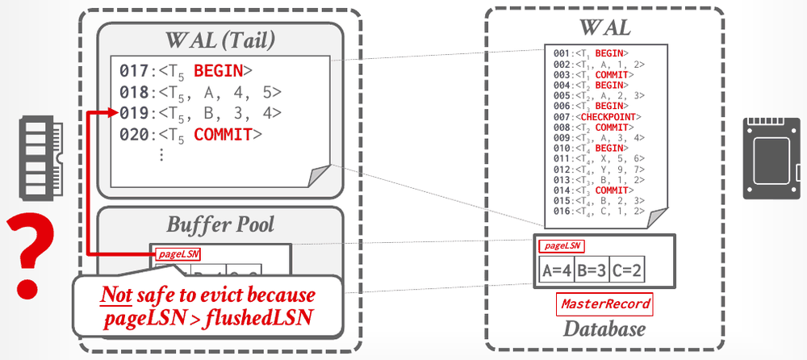
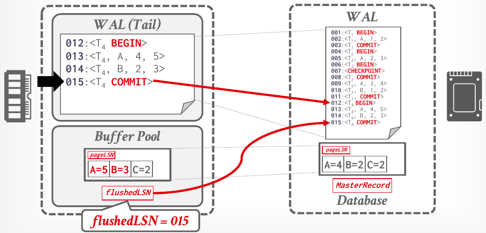
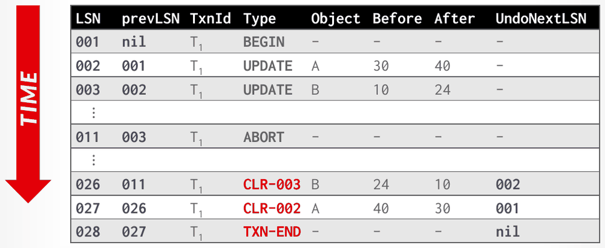
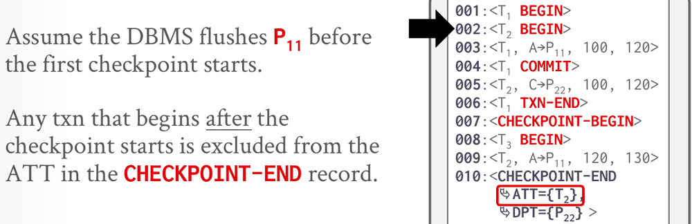

Database Internals in Go · Unit 9 · Lesson 3
Log Sequence Numbers, Aborts, and Checkpoints
Number every log record with an LSN, use pageLSN and flushedLSN to decide when a dirty page may be written, commit and abort a transaction with COMMIT, CLR and TXN-END records, and work out what a fuzzy checkpoint's ATT and DPT say about the disk.
Lesson 2 settled on a write-ahead log with STEAL and NO-FORCE: dirty pages may reach disk at any time, as long as their log records got there first, and a commit only has to flush the log. Two problems remain. The buffer pool needs a cheap way to check "log first", and the log grows forever, so a recovery that replays all of it would take longer every day. This lesson covers the bookkeeping ARIES does during normal processing to solve both: log sequence numbers, the records written at commit and abort, and checkpoints that record which transactions were running and which pages were dirty. Lesson 4 uses all of it to recover from a crash.
Unit 8, Lesson 1: Project 4 keeps a watermark. What is it?
Unit 7, Lesson 2: under strong strict two-phase locking, when may a transaction release its exclusive locks?
Unit 3, Lesson 7: in Graefe's comparison of locks and latches, what does a latch protect, and for how long is it held?
Checkpoints in their simplest form
Lecture #21 ends with the problem (slide 34): the WAL grows forever, and after a crash the DBMS would have to replay the entire log, which takes a long time. So the DBMS periodically takes a checkpoint, where it flushes all buffers out to disk. The checkpoint gives a hint on how far back recovery needs to replay the log, and it lets the DBMS truncate the log up to a safe point. The notes name the two purposes log pruning and recovery efficiency.
The simplest version is a blocking checkpoint (slide 35):
- Pause all queries.
- Flush all WAL records in memory to disk.
- Flush all modified pages in the buffer pool to disk.
- Write a
<CHECKPOINT>entry to the WAL and flush it to disk. - Resume queries.
![Left, text: Use the CHECKPOINT record as the starting point for analyzing the WAL. Any txn that committed before the checkpoint is ignored (T1). T2 + T3 did not commit before the last checkpoint. Need to redo T2 because it committed after checkpoint. Need to undo T3 because it did not commit before the crash. Right, a WAL: T1 BEGIN; T1, A, 1, 2; T1 COMMIT; T2 BEGIN; T2, A, 2, 3; T3 BEGIN; CHECKPOINT; T2, B, 4, 5; T2 COMMIT; T3, A, 3, 4; then a skull for the crash. Black arrows point at T1 COMMIT, T2 BEGIN, T3 BEGIN and T2 COMMIT.](../assets/slides/L21-checkpoint-redo-undo-p95.png)
Slide 37 names two problems with this. The DBMS must stall transactions while it takes the checkpoint, to get a consistent snapshot. And scanning the log to find the uncommitted transactions can take a long time. Slide 38 adds the tuning problem: checkpointing too often degrades runtime performance, because the system spends too much time flushing buffers, while waiting a long time makes each checkpoint large and slow and makes recovery much longer. The frequency is a tunable option that depends on how quickly the application needs to recover. Lecture #22 fixes both problems, but it first needs a way to name positions in the log.
#21 Write-Ahead Logging + Shadow Paging, "Checkpoints and conclusion" (1:10:32), slides 34–40: why checkpoint, the blocking protocol, the three-transaction example and how often to checkpoint.
ARIES
Lecture #22 teaches one recovery algorithm, ARIES (Algorithms for Recovery and Isolation Exploiting Semantics), developed at IBM Research in the early 1990s for DB2 (slide 5). Slide 5 adds that not every system implements ARIES exactly as defined in the paper, but they are close enough. Its three main ideas (slide 6):
- Write-ahead logging: flush the log records for a change to disk before the database object is written to disk, with the STEAL and NO-FORCE buffer pool policies.
- Repeating history during redo: on restart, retrace the logged actions and restore the database to its exact state before the crash.
- Logging changes during undo: record undo actions in the log, so that an action is not repeated if the system fails again.
Slide 4 states the goal with three transactions under STEAL and NO-FORCE: T1 commits, T2 aborts, T3 is still running when the system crashes. After the restart T1 must be durable, and T2 and T3 must be aborted. This lesson covers what ARIES does while the system is running; Lesson 4 covers the restart.
#22 Database Crash Recovery, "Database recovery basics" (1:00), slides 3–7: the two halves of recovery, the goal after a crash and ARIES's main ideas.
Log sequence numbers
Every log record gets a log sequence number (LSN), globally unique and monotonically increasing, so LSNs record the physical order in which transactions changed the database (slides 8–9). Several components keep an LSN that concerns them:
- Each data page holds a pageLSN: the LSN of the most recent log record that updated the page. The DBMS updates it every time a transaction modifies a record in the page (slide 12).
- The system keeps a flushedLSN in memory: the largest LSN flushed to the log on disk so far. It is updated every time the DBMS writes the WAL buffer to disk.
With those two numbers the write-ahead rule becomes a single comparison (slide 9): before page x is written to disk, pageLSNx ≤ flushedLSN. If the page's newest change has a larger LSN than anything on disk, its log record is still in memory, and the log must be flushed first.
![Left, text: Log Sequence Number (LSN), unique and monotonically increasing. Each data page contains a pageLSN, the LSN of the most recent log record that updated the page. System keeps track of flushedLSN, the max LSN flushed so far. WAL: before a page x is written, pageLSN x is at most flushedLSN. Right: labels LSNs (on the WAL), pageLSNs (on two data pages) and flushedLSN (in memory). A WAL box is split into Disk at the top and DRAM at the bottom, with a downward TIME arrow. Arrows run from one page's pageLSN into the Disk part and from the other's into the DRAM part; the flushedLSN arrow points at the boundary.](../assets/slides/L22-wal-bookkeeping-p9.png)
Slide 11 shows it on a running system. The WAL on disk holds records 001 to 016, so flushedLSN is 016, and the in-memory tail holds T5's records 017 to 020. A buffer-pool page whose pageLSN is 019 holds T5's change to B, which exists only in the tail.

flushedLSN. A large red question mark sits beside a memory chip. Right, disk: a WAL with records 001 to 016, and a Database page with A=4, B=3, C=2 and a MasterRecord label." loading="lazy">Slide 10 lists all the LSNs ARIES uses. The last three are introduced with the tables and checkpoints later in this lesson:
| Name | Where it lives | What it is |
|---|---|---|
| flushedLSN | memory | last LSN in the log on disk |
| pageLSN | each page | newest update to the page |
| recLSN | dirty page table | oldest update to the page since it was last flushed |
| lastLSN | active transaction table | latest record of the transaction |
| MasterRecord | disk | LSN of the latest checkpoint |
pageLSN and recLSN are easy to confuse. pageLSN is the newest change to a page, and the WAL rule uses it. recLSN is the oldest change that hasn't reached disk yet, and recovery uses it to decide where to start redoing.
Project 1's FrameHeader has isDirty and no pageLSN, so your BPM writes a dirty victim back without asking the log anything, which is fine while there is no log. Under ARIES each frame would also carry its page's pageLSN, and eviction or FlushPage would compare it with flushedLSN and flush the log first when it is larger. BusTub keeps the hook dormant: its stubbed LogManager has a persistent_lsn_ field (its comment: "The log records before and including the persistent lsn have been written to disk", which makes it flushedLSN), and a comment says the buffer pool forces a log flush when "the flushed page has a larger LSN than persistent LSN". The Go port leaves the log manager out entirely, and none of this is part of a project.
#22 Database Crash Recovery, "Log sequence numbers" (7:43), slides 8–12: pageLSN, flushedLSN, the WAL rule and the safe-to-evict example.
Commit
Slide 13 fixes the assumptions for the rest of the lecture: every log record fits in a single page, disk writes are atomic, tuples are single-versioned under strong strict 2PL, the buffer pool uses STEAL and NO-FORCE with a WAL, log records are physical, and index records are left out.
When a transaction commits (slide 14), the DBMS writes a COMMIT record to the log and guarantees that all log records up to and including it are flushed to disk. These log flushes are sequential, synchronous writes, with many log records per log page. Once the COMMIT record is on disk, the DBMS acknowledges the commit to the application. When the commit has succeeded, the DBMS writes a TXN-END record: it says that no new log record for that transaction will ever appear in the log again. TXN-END is internal bookkeeping, and the DBMS doesn't need to flush it immediately.

Later in slide 15, <T4 TXN-END> appears in the log tail, and the notes add that the DBMS can then trim the in-memory log up to flushedLSN. A transaction counts as committed when its COMMIT record is on disk. TXN-END comes afterwards and only tells the DBMS that it can forget the transaction.
Abort and compensation log records
Aborting a transaction is a special case of ARIES's undo, applied to only one transaction (slide 16). To walk a transaction's records backward, every log record gets one more field, prevLSN: the LSN of the same transaction's previous record. The prevLSNs form a linked list per transaction. The transaction does not release its locks until it has reverted all its changes, which is the strong strict 2PL rule from the warm-up.
Slide 17 shows why undoing needs log records of its own. T4 writes 012 BEGIN, 013 (A 4→5), 014 (B 2→3) and 015 ABORT, and later 099 TXN-END, but the log has to record the steps that undid 013 and 014 in between. Those are compensation log records (CLRs). A CLR describes the action taken to reverse one earlier update record (slide 18). It has all the fields of an update record plus an undoNextLSN: the LSN of the next record to be undone. The DBMS adds CLRs to the in-memory WAL buffer, and it does not wait for them to be flushed before telling the application that the transaction aborted.

The abort algorithm (slide 23):
- Write an ABORT record to the log for the transaction.
- Go through the transaction's updates in reverse order. For each update, write a CLR to the log and restore the old value.
- Write a TXN-END record and release the locks.
The slide ends with a rule Lesson 4 depends on: CLRs never need to be undone, because a CLR is already an undo. If the system crashes halfway through an abort, recovery redoes the CLRs that were written and continues from the last CLR's undoNextLSN, so no update is ever undone twice.
The application learns about a commit only after the COMMIT record is flushed, but it learns about an abort before the CLRs are flushed. TXN-END, on the other hand, is written for both outcomes: 028 ends an aborted transaction exactly as <T4 TXN-END> ended a committed one.
#22 Database Crash Recovery, "Commit operations" (16:44), slides 13–23: the commit flush and TXN-END, then prevLSN chains, CLRs and the abort algorithm.
Checkpoints that don't stop everything
Lecture #22 returns to checkpoints with three designs, each blocking less than the one before.
Non-fuzzy checkpoints
A non-fuzzy checkpoint halts everything to get a consistent snapshot (slide 25): halt the start of any new transactions, wait until all active transactions finish, and flush the dirty pages to disk. It is bad for runtime performance, because one long transaction stalls the whole system, but it makes recovery easy.
Slightly better checkpoints
The slightly better checkpoint (slide 26) pauses only the transactions that modify data, by blocking queries from acquiring write latches on pages, and it does not wait for active transactions to finish. It still flushes the dirty pages. The slide's animation shows the consequence: a running transaction has already modified page 3, the checkpoint writes pages 1 to 3 while the transaction is paused, and page 3 reaches disk with the uncommitted change in it. Then the transaction resumes and modifies page 1. The disk now holds no transaction-consistent snapshot, so the checkpoint must also record the system's internal state as of its beginning, in two tables.
The active transaction table (ATT) has one entry per active transaction (slide 27):
txnId, a unique transaction identifier;status: running (R), committing (C) or candidate for undo (U);lastLSN, the most recent LSN the transaction created.
The DBMS removes a transaction's entry after it appends the transaction's TXN-END record to the in-memory WAL buffer. The notes spell out what that means: the ATT contains every transaction without a TXN-END record, including committed and aborted ones.
The dirty page table (DPT) has one entry per dirty page in the buffer pool (slide 28), holding the page's recLSN: the LSN of the oldest log record that modified the page since the last time the DBMS wrote it to disk. The notes add that it doesn't matter whether the change came from a running, committed or aborted transaction. With recLSN the DBMS can tell whether a page was modified before or after the checkpoint started.
Slide 29 runs this protocol. Each checkpoint is one record carrying both tables:
001:<T1 BEGIN>
002:<T2 BEGIN>
003:<T1, A→P11, 100, 120>
004:<T1 COMMIT>
005:<T2, C→P22, 100, 120>
006:<T1 TXN-END>
007:<CHECKPOINT ATT={T2}, DPT={P22}>
008:<T3 BEGIN>
009:<T2, A→P11, 120, 130>
010:<T2 COMMIT>
011:<T3, B→P33, 200, 400>
012:<CHECKPOINT ATT={T2,T3}, DPT={P11,P33}>
013:<T3, B→P33, 400, 600>At 007, T1 has ended and P11 is assumed to have been flushed, so T2 is the only active transaction and P22 the only dirty page. At 012, P22 is assumed to have been flushed. T2 committed at 010 but has no TXN-END yet, so it is still in the ATT, next to T3. The slide's verdict: the protocol is still not ideal, because the DBMS stalls transactions during the checkpoint.
Fuzzy checkpoints
A fuzzy checkpoint lets active transactions keep running while the system writes the checkpoint's log records, and it makes no attempt to force dirty pages to disk (slide 30). It needs two new records to mark its boundaries:
- CHECKPOINT-BEGIN marks the start of the checkpoint. The notes say that this is when the DBMS takes its snapshot of the ATT and DPT.
- CHECKPOINT-END carries that snapshot: the ATT and DPT as they were when the checkpoint started.
Other records can appear between the two, because nothing is paused. When the checkpoint completes, the LSN of its CHECKPOINT-BEGIN record is written to the MasterRecord on disk (slide 31). Slide 10's table calls the MasterRecord "the LSN of the latest checkpoint". More precisely, it holds the LSN of the CHECKPOINT-BEGIN of the latest checkpoint whose CHECKPOINT-END was written. A checkpoint that began but never ended doesn't count.

Because a fuzzy CHECKPOINT-END describes the moment of its BEGIN, reading one takes care. These are the rules the homework below depends on:
- A transaction that began after CHECKPOINT-BEGIN is not in the ATT, even though it is running when CHECKPOINT-END is written.
- A transaction that committed before BEGIN but had no TXN-END yet is in the ATT, with status C.
- A page not in the DPT was clean at BEGIN: every change logged before BEGIN was on disk then. It says nothing about changes logged after BEGIN.
- A page in the DPT was dirty at BEGIN: some change logged before BEGIN had not reached disk. It isn't necessarily dirty later, because the buffer pool may have flushed it at any time since, during the checkpoint included.
#22 Database Crash Recovery, "Fuzzy checkpointing" (33:23), slides 24–31: non-fuzzy and slightly better checkpoints, the ATT and DPT, and fuzzy CHECKPOINT-BEGIN and CHECKPOINT-END.
BusTub has a CheckpointManager stub that isn't compiled and is switched off by DISABLE_CHECKPOINT_MANAGER. Its comment describes the blocking kind: "Block all the transactions and ensure that both the WAL and all dirty buffer pool pages are persisted to disk, creating a consistent checkpoint." Its log record header (size, LSN, transID, prevLSN, LogType) has the prevLSN chain, but its record types include no CLR, TXN-END or checkpoint records, so it couldn't express this lesson's protocol. Unit 9 has no project, so none of this is yours to build.
The homework's log
HW6 Question 1 uses this log, written with fuzzy checkpoints. Each object is stored in its own page, and the page id is the object id. An update record lists the object, its before-image and its after-image; a CLR adds the undoNextLSN. Every part assumes that the database started clean (no active transactions, no dirty pages) at the start of the log, and that a background thread periodically flushes dirty pages to reduce eviction and recovery costs. Parts (a) and (b) crash at different points; Lesson 4 uses the whole log for part (c).
1000 <T1, BEGIN, prevLSN=∅>
1001 <T2, BEGIN, prevLSN=∅>
1002 <T3, BEGIN, prevLSN=∅>
1003 <T1, UPDATE, prevLSN=1000, A, 1, 2>
1004 <T3, UPDATE, prevLSN=1002, C, 1, 2>
1005 <T3, COMMIT, prevLSN=1004>
1006 <CHECKPOINT-BEGIN>
1007 <T1, UPDATE, prevLSN=1003, B, 1, 2>
1008 <T4, BEGIN, prevLSN=∅>
1009 <T4, UPDATE, prevLSN=1008, C, 2, 3>
1010 <CHECKPOINT-END, DPT={C}, ATT={???}>
1011 <T2, UPDATE, prevLSN=1001, D, 1, 2>
1012 <T4, UPDATE, prevLSN=1009, E, 1, 2>
1013 <T3, TXN-END, prevLSN=1005>
1014 <CHECKPOINT-BEGIN>
1015 <T1, UPDATE, prevLSN=1007, A, 2, 3>
1016 <T4, UPDATE, prevLSN=1012, E, 2, 3>
1017 <CHECKPOINT-END, DPT={???}, ATT={???}>
1018 <T1, UPDATE, prevLSN=1015, A, 3, 4>
1019 <T4, ABORT, prevLSN=1016>
1020 <CHECKPOINT-BEGIN>
1021 <T1, COMMIT, prevLSN=1018>
1022 <T4, CLR, prevLSN=1019, E, 3, 2, undoNextLSN=1012>
1023 <T1, TXN-END, prevLSN=1021>
CRASH!Part (a) crashes right after record 1010 is flushed to disk, and part (b) right after record 1017.
Work it out
Decide each one and say why before opening the result. The first comes from the lecture; the rest are HW6 parts that the quiz below doesn't ask.
-
What to think about
In which order are T4's updates undone, and what is "the next record to be undone" after each one?
The method
Follow slide 23: one CLR per update, newest first, with before and after swapped. A CLR's undoNextLSN is the prevLSN of the update it undoes. Its own prevLSN is T4's previous record, as for any record. When the chain reaches BEGIN, write TXN-END.
The result
016|015:<T4 CLR-014, B, 3, 2, undoNext=013> 017|016:<T4 CLR-013, A, 5, 4, undoNext=012> 018|017:<T4 TXN-END>A and B are back to 4 and 2. This is slide 22's pattern: there, CLR-003 points to 002 and CLR-002 points to 001, T1's BEGIN. (On slide 17 the TXN-END is 099 because other records come in between.)
-
What to think about
What does TXN-END tell the DBMS, and does an aborted transaction need to tell it the same thing?
The method
Look at the last step of slide 23's abort algorithm, and at the last row of slide 22's table.
The result
False. An abort ends with TXN-END too (slide 23; record 028 on slide 22). The official solution: a transaction commits when its COMMIT log record is written, and TXN-END is an optimization that indicates the transaction can be removed from the transaction table. That applies to both outcomes.
-
What to think about
Which transactions does each of the three checkpoint designs pause?
The method
Compare slide 30's definition with slides 25 and 26.
The result
True. A fuzzy checkpoint lets active transactions continue to run while it writes its log records (slide 30). The official solution points to the motivation for checkpointing. The statement's "consistent snapshot" is loose wording: a fuzzy checkpoint forces no pages to disk at all. What it writes is the ATT and DPT, in its CHECKPOINT-END record.
-
What to think about
When was B changed, relative to CHECKPOINT-BEGIN 1006?
The method
The DPT in 1010 describes the pages at 1006. For a change logged after 1006, ask only whether the background writer could have flushed it before the crash, and whether it had to.
The result
B=1 or B=2. B's only change, 1007, comes after the BEGIN, so the DPT says nothing about it. The background writer may have flushed B after 1007 (B=2) or not (B=1); nothing forces it, since 1007 belongs to an uncommitted transaction and the policy is NO-FORCE anyway. The official solution: "Page B was not in the DPT, but there has been a change after the checkpoint starts. Hence B=1 or B=2."
-
What to think about
The ATT is a snapshot taken at CHECKPOINT-BEGIN 1014. Which transactions had begun by then, and which had a TXN-END?
The method
Go through T1 to T4 and check two records for each: its BEGIN (before 1014?) and its TXN-END (before 1014?). A COMMIT alone doesn't remove a transaction.
The result
T1, T2 and T4. T3's TXN-END at 1013 came before the BEGIN, so T3 is gone. T4 began at 1008, before 1014, and has no TXN-END. T1 and T2 are still running. The official solution: "T3's TXN-END log has been written so it is no longer in the ATT."
The homework behind these questions
The questions marked HW6 come from CMU's Homework #6: Question 1 and Question 2, with the original figures. Work each one out on paper first, then click the option you got. The quiz tells you at once whether it matches CMU's official answer, and explains why. To compare your working step by step, open the official solutions for Question 1 and Question 2.
Check your understanding
These questions use the homework's log above.
HW6 Q1(a)i: the system crashes right after record 1010 is flushed. Record 1010's DPT is {C}. Which values of A could be on disk when recovery starts?
HW6 Q1(a)iii: same crash, right after 1010. Which values of C could be on disk?
HW6 Q1(a)iv: which transactions are in the ATT recorded in CHECKPOINT-END 1010?
HW6 Q1(b)ii: the system crashes right after record 1017 is flushed. Which describes exactly the possible contents of the DPT recorded in 1017?
HW6 Q2(g): after the DBMS begins a fuzzy checkpoint, may it flush dirty pages to disk before the checkpoint ends?
Primary sources: CMU 15-445/645 Fall 2025 Lecture #21 slides 34–38 and notes (section 8); Lecture #22 slides 3–31 and notes (sections 1–4); Homework #6 Question 1 (a) and (b) and Question 2 (e) to (g), with the official solutions; BusTub src/include/recovery/, src/recovery/log_manager.cpp and src/include/common/config.h at commit d49b823; the Go port's bufferpool/frame_header.go.